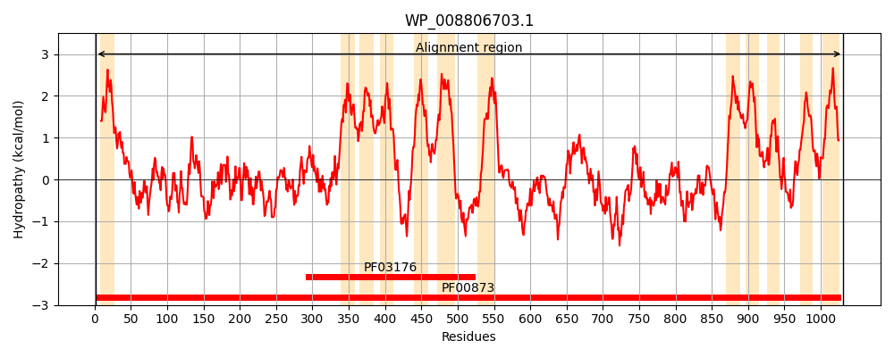
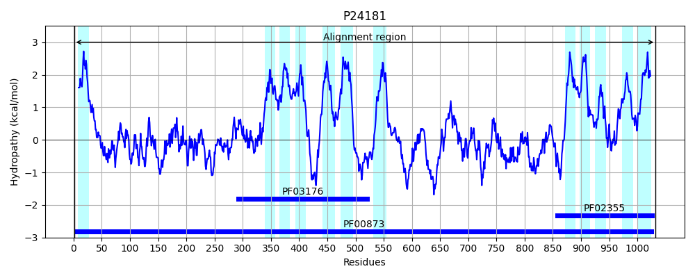
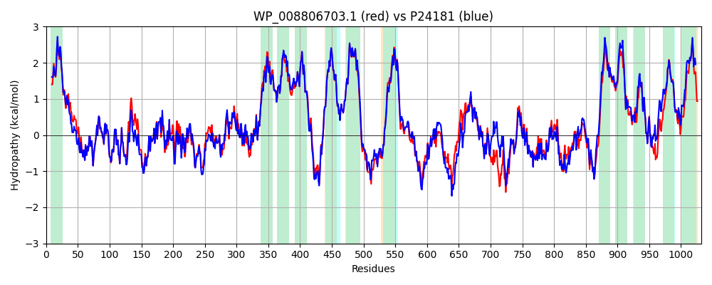

Hit Accession: P24181
Hit TCID: 2.A.6.2.1
Hit Description: gnl|BL_ORD_ID|9489 gnl|TC-DB|P24181|2.A.6.2.1 ACRIFLAVINE RESISTANCE PROTEIN F (PROTEIN ENVD) - Escherichia coli.
Mach Len: 1032
e:0.000000
Query TMS Count : 12
Hit TMS Count: 12
TMS-Overlap Score: 12.000000
Predicted Substrates:CHEBI:8829;rhodamine 6G, CHEBI:383703;3,6-diamino-10-methylacridinium chloride, CHEBI:23614;deoxycholate, CHEBI:2496;doxorubicin, CHEBI:42478;ethidium
BLAST Alignment:
Score: 4557 , Bit scores: 1759 bits, E-value: 0.0e+00, Alignment length: 1032, Percentage identity: 86
Query: 1 MSKFFIHRPVFAWVLAIIMMIAGGLAILQLPIAQYPTIAPPAVAISATYPGADAQTVQDTVTQVIEQNMNGIDNLMYMSSTSDSAGSVTITLTFKSGTDPDIAQVQVQNKLQLATPLLPQEVQQQGISVEKSSSSFLLVAGFISDNPATTQDDISDYVASNVKDPISRLNGVGDVQLFGAQYAMRVWLDGNLLNKYNLTPVDVINALKVQNDQIAAGQLGGTPALKGQQLNASIIAQTRLKDPQEFGKVTLRVNADGSVVHLKDVARIELGGENYNVVARINGKPASGLGIKLATGANALDTATAIKAKLAELQPYFPQGMKVVYPYDTTPFVKISIHEVVKTLFEAIILVFLVMYLFLQNMRATLIPTIAVPVVLLGTFAVLSMFGYSINTLTMFGMVLAIGLLVDDAIVVVENVERVMVEEKLSPKEATEKSMSQIQGALVGIAMVLSAVFVPMAFFGGSTGAIYRQFSITIVSAMALSVLVALVLTPALCATLLKPASAEHHEKK-GFFGWFNARFDQSVNHYTNSVSGILRGTGRYLVIYLVIVVGMAVLFMRLPTSFLPDEDQGVFLTMIQLPSGATQERTQKVLDTVTDYYLHNEKANVESVFTVNGFSFSGQGQNSGMAFVSLKPWEARSGDENNVESIIKRATVAFSQIKDAMVFPFNMPAIIELGTATGFDFELIDQGGLGHTALTQARNQLLGMVKQHPDQLVRVRPNGLEDTPQFKLDVDQEKAQALGVSLSDINETISAALGGYYVNDFIDRGRVKKVYVQADAHFRMLPSDINNMYVRSANGEMVPFSAFVTSRWIYGSPRLERYNGLPSMEILGEASPGKSTGEAMALMEQLASKLPSGIGYDWTGMSYQERLSGNQAPALYAISLIVVFLCLAALYESWSIPFSVMLVVPLGVIGALLAATLRGLNNDVYFQVGLLTTIGLSAKNAILIVEFAKDLMEKEGKGIIEATLEASRMRLRPILMTSLAFILGVMPLVISHGAGSGAQNAVGTGVMGGMLTATLLAIFFVPVFFVVVRRRF 1031
M+ FFI RP+FAWVLAII+M+AG LAILQLP+AQYPTIAPPAV++SA YPGADAQTVQDTVTQVIEQNMNGIDNLMYMSSTSDSAGSVTITLTF+SGTDPDIAQVQVQNKLQLATPLLPQEVQQQGISVEKSSSS+L+VAGF+SDNP TTQDDISDYVASNVKD +SRLNGVGDVQLFGAQYAMR+WLD +LLNKY LTPVDVIN LKVQNDQIAAGQLGGTPAL GQQLNASIIAQTR K+P+EFGKVTLRVN+DGSVV LKDVAR+ELGGENYNV+ARINGKPA+GLGIKLATGANALDTA AIKAKLAELQP+FPQGMKV+YPYDTTPFV++SIHEVVKTLFEAI+LVFLVMYLFLQNMRATLIPTIAVPVVLLGTFA+L+ FGYSINTLTMFGMVLAIGLLVDDAIVVVENVERVM+E+KL PKEATEKSMSQIQGALVGIAMVLSAVF+PMAFFGGSTGAIYRQFSITIVSAMALSVLVAL+LTPALCATLLKP SAEHHE K GFFGWFN FD SVNHYTNSV IL TGRYL+IY +IV GM VLF+RLP+SFLP+EDQGVFLTMIQLP+GATQERTQKVLD VTDYYL NEKANVESVFTVNGFSFSGQ QN+GMAFVSLKPWE R+GDEN+ E++I RA + +I+D V PFNMPAI+ELGTATGFDFELIDQ GLGH ALTQARNQLLGM QHP LV VRPNGLEDT QFKL+VDQEKAQALGVSLSDIN+TIS ALGG YVNDFIDRGRVKK+YVQADA FRMLP D++ +YVRSANGEMVPFSAF TS W+YGSPRLERYNGLPSMEI GEA+PG S+G+AMALME LASKLP+GIGYDWTGMSYQERLSGNQAPAL AIS +VVFLCLAALYESWSIP SVMLVVPLG++G LLAATL NDVYF VGLLTTIGLSAKNAILIVEFAKDLMEKEGKG++EATL A RMRLRPILMTSLAFILGV+PL IS+GAGSGAQNAVG GVMGGM++ATLLAIFFVPVFFVV+RR F
Sbjct: 1 MANFFIRRPIFAWVLAIILMMAGALAILQLPVAQYPTIAPPAVSVSANYPGADAQTVQDTVTQVIEQNMNGIDNLMYMSSTSDSAGSVTITLTFQSGTDPDIAQVQVQNKLQLATPLLPQEVQQQGISVEKSSSSYLMVAGFVSDNPGTTQDDISDYVASNVKDTLSRLNGVGDVQLFGAQYAMRIWLDADLLNKYKLTPVDVINQLKVQNDQIAAGQLGGTPALPGQQLNASIIAQTRFKNPEEFGKVTLRVNSDGSVVRLKDVARVELGGENYNVIARINGKPAAGLGIKLATGANALDTAKAIKAKLAELQPFFPQGMKVLYPYDTTPFVQLSIHEVVKTLFEAIMLVFLVMYLFLQNMRATLIPTIAVPVVLLGTFAILAAFGYSINTLTMFGMVLAIGLLVDDAIVVVENVERVMMEDKLPPKEATEKSMSQIQGALVGIAMVLSAVFIPMAFFGGSTGAIYRQFSITIVSAMALSVLVALILTPALCATLLKPVSAEHHENKGGFFGWFNTTFDHSVNHYTNSVGKILGSTGRYLLIYALIVAGMVVLFLRLPSSFLPEEDQGVFLTMIQLPAGATQERTQKVLDQVTDYYLKNEKANVESVFTVNGFSFSGQAQNAGMAFVSLKPWEERNGDENSAEAVIHRAKMELGKIRDGFVIPFNMPAIVELGTATGFDFELIDQAGLGHDALTQARNQLLGMAAQHPASLVSVRPNGLEDTAQFKLEVDQEKAQALGVSLSDINQTISTALGGTYVNDFIDRGRVKKLYVQADAKFRMLPEDVDKLYVRSANGEMVPFSAFTTSHWVYGSPRLERYNGLPSMEIQGEAAPGTSSGDAMALMENLASKLPAGIGYDWTGMSYQERLSGNQAPALVAISFVVVFLCLAALYESWSIPVSVMLVVPLGIVGVLLAATLFNQKNDVYFMVGLLTTIGLSAKNAILIVEFAKDLMEKEGKGVVEATLMAVRMRLRPILMTSLAFILGVLPLAISNGAGSGAQNAVGIGVMGGMVSATLLAIFFVPVFFVVIRRCF 1032 | Protein Hydropathy Plots: |
|---|
|  |  |
Pairwise Alignment-Hydropathy Plot:
|
|---|
|  |